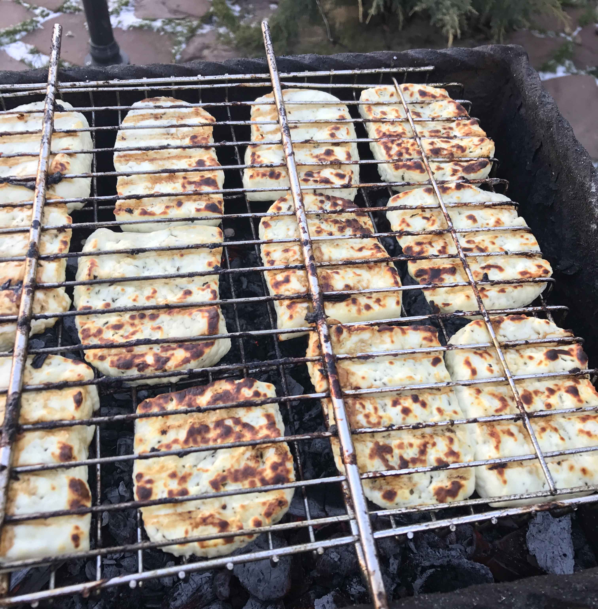

30 дней
1 490 ₽
Полный доступ к материалам клуба и возможность задавать свои вопросы.
Закрытый клуб для сыроделов
Проверенные решения и мой 13-летний опыт в одном месте.
Техкарты, теория, производство, оборудование, документы, бизнес и ответы на ваши вопросы.
Чтобы глубже понимать процессы, видеть взаимосвязи и получать более стабильный результат.
1 490 ₽ / 30 дней
Получить доступМожно зайти всего на месяц. Если дальше клуб пока не нужен — просто не продлевать.
77
уроков на платформе
на сентябрь 2026 года
12
техкарт по сырам
6
видеоуроков по сырам
Лично
отвечаю на вопросы участников
Проверил Применил Оставил в базе
За 13 лет я много чего перепробовал: технологии, культуры, режимы, оборудование.
Что-то подсматривал у других технологов, до чего-то доходил через практику и собственные ошибки.
В «Сырном комбайне» оставляю то, что сам проверил и чем реально доволен.
Небольшие изменения в технологии — другой результат в готовом сыре.
Молоко не пастеризуют. Нагревают, вносят фермент, разрезают сгусток, вымешивают и формуют. Затем сыр варят в горячей сыворотке.
Готовый сыр хорошо жарится и держит форму, но по текстуре часто получается довольно резиновым.
Пастеризую молоко и использую для заквашивания мезофильные культуры с диацетилактисом.
Дальше — фермент, разрезка, вымешивание, формовка и варка в сыворотке при 75 °C около 20–30 минут.

Получаем Халлуми, который хорошо жарится, не растекается, остаётся заметно мягче внутри и имеет дополнительный сливочный аромат.
Вот почему даже знакомая технология у меня может выглядеть по-другому: я меняю конкретные этапы, чтобы получить конкретный результат.
Если вашего вопроса внутри пока нет
Каждый вопрос я пропускаю через свой опыт.
Стараюсь не просто ответить в лоб, а разобраться, от чего вообще зависит результат, где могут быть риски, какие есть варианты и что бы я сам проверил в такой ситуации.
Можно просто сказать: проверьте pH.
Но я бы начал разбирать весь процесс.
То есть вопрос «почему нет глазков?» быстро превращается в разбор всего процесса, который отвечает за рисунок Маасдама.
Просто по фотографии я бы на такой вопрос не отвечал.
Сначала смотрю спецификацию — что производитель вообще указал и зафиксировал по оборудованию.
Потом уже начинаю разбирать:
И только после этого уже можно говорить, нормальная это сыроварня или нет, где у неё слабые места и подходит ли она именно под вашу задачу.
Я бы смотрел не только на саму плитку.
Дешёвая плитка со временем может давать сколы. В эти места начинает попадать сыворотка, и дальше проблема уже уходит под покрытие. В итоге потом можно прийти к тому, что пол придётся вскрывать и переделывать.
Обычная затирка — та же история. Она пропускает через себя влагу и сыворотку. Поэтому для цеха я бы смотрел в сторону эпоксидной затирки.
Ещё один вариант — полимерный пол, лучше с противоскользящей крошкой, чтобы мокрый пол не становился скользким.
По периметру я бы делал заход пола на стены, чтобы не оставлять обычный прямой угол.
И обязательно заранее продумал бы уклоны и трапы — куда будет уходить вода и как вообще организовать слив.
А постоянно лить сыворотку просто на пол я бы вообще не закладывал. Это лишняя органика в цехе и дополнительные микробиологические риски, в том числе по бактериофагам.
То есть вопрос «какую плитку положить?» у меня довольно быстро превращается в вопрос: как сделать пол так, чтобы потом его не пришлось вскрывать и переделывать.
Можно продолжить диалог и задавать уточняющие вопросы, если хочется разобраться глубже.
Иногда один вопрос в итоге превращается в полноценный разбор темы. Такие разборы тоже остаются внутри клуба — к ним можно вернуться позже.
Платформа Telegram MAX Вопросы лично Денису
Я продолжаю собирать «Сырный комбайн».
Добавляю новые уроки, технологии сыров, теорию и материалы по вопросам, которые возникают в реальной работе.
База растёт вместе с вопросами сыроделов.
Несколько сообщений от участников клуба.
Можно зайти всего на 30 дней.
За это время посмотреть нужные материалы, пройти интересующие уроки и задать свои вопросы.
Если дальше клуб пока не нужен — просто не продлевать.
Если через несколько месяцев появится новая задача — можно вернуться.